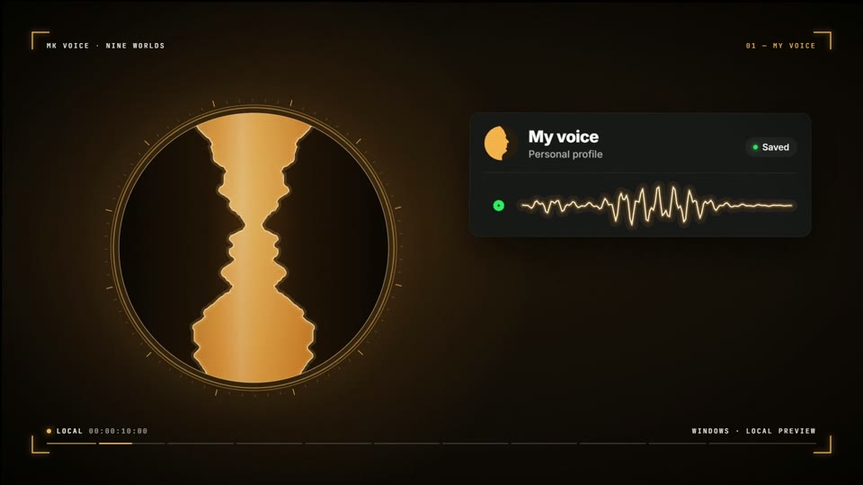
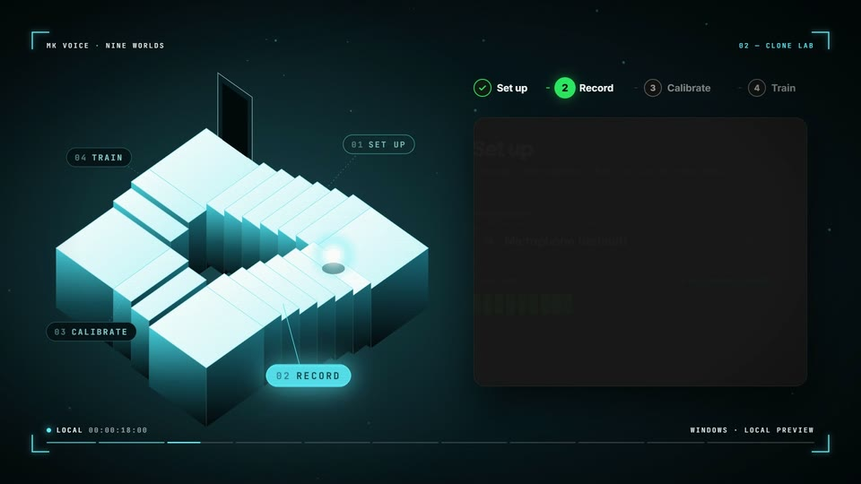
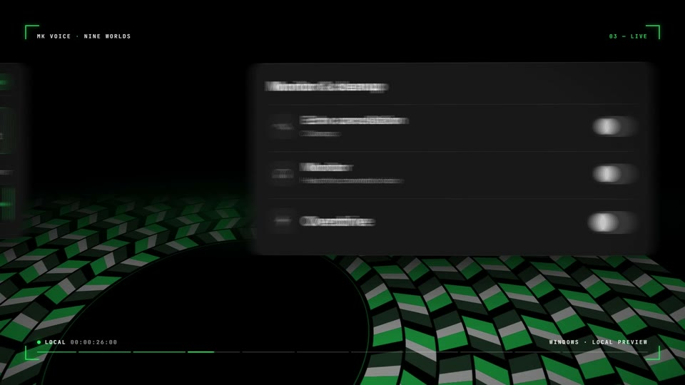
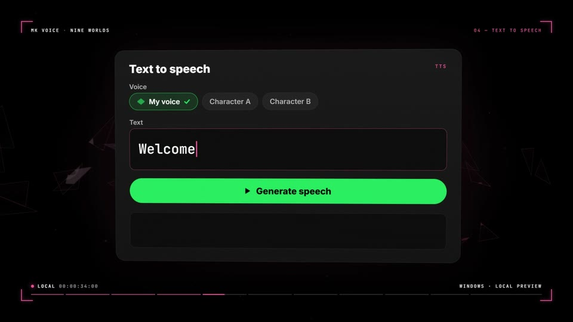
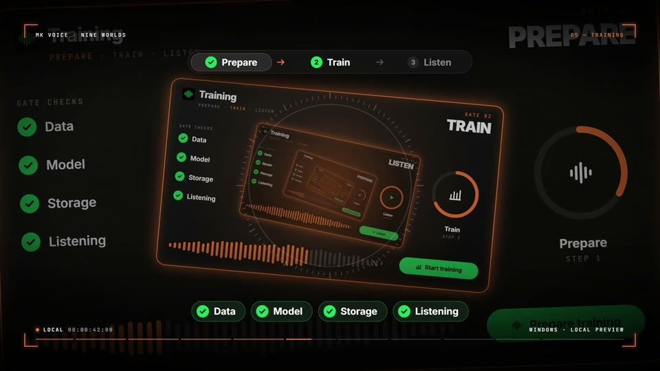
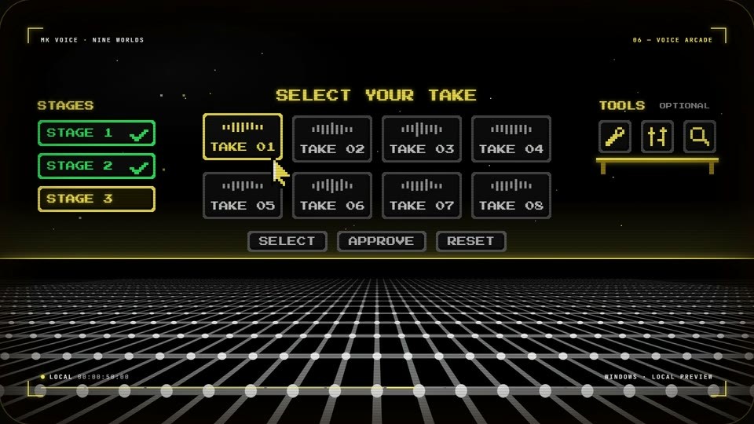
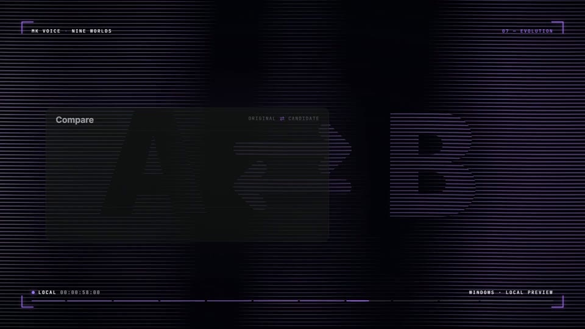
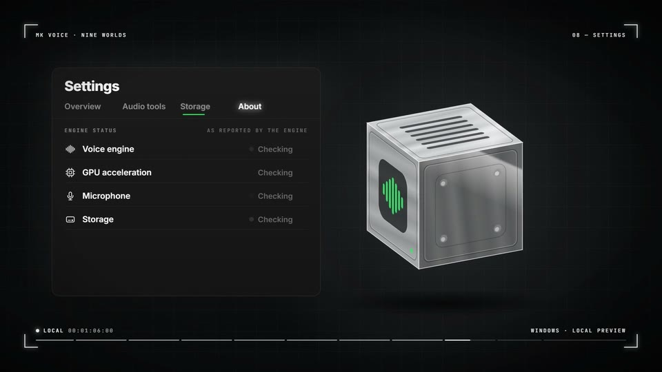
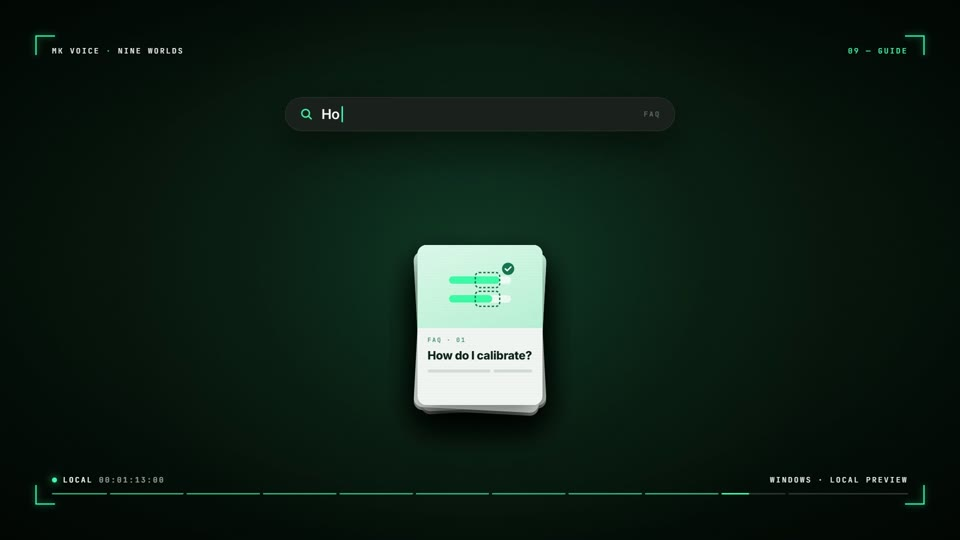

Nine worlds. One voice.
A journey through a local voice studio.
A journey through a local voice studio.
Explore nine sides of MK Voice at your own pace. Each chapter has a still image and a short scene you can choose to play.
A journey through a local voice studio.

A place for your profiles, recordings and comparisons.

Set up, record, calibrate and train. One step at a time.

Follow the signal from microphone to voice to output.

Bring a script into the studio and shape its delivery.

Prepare a dataset and follow the training journey.

Try a stage, make a selection, approve or reset.

Compare an original with a candidate. Keep the results.

Audio tools, storage and the status your engine reports.

An illustrated guide and searchable answers.
Return to a chapter, or step through to the music world.